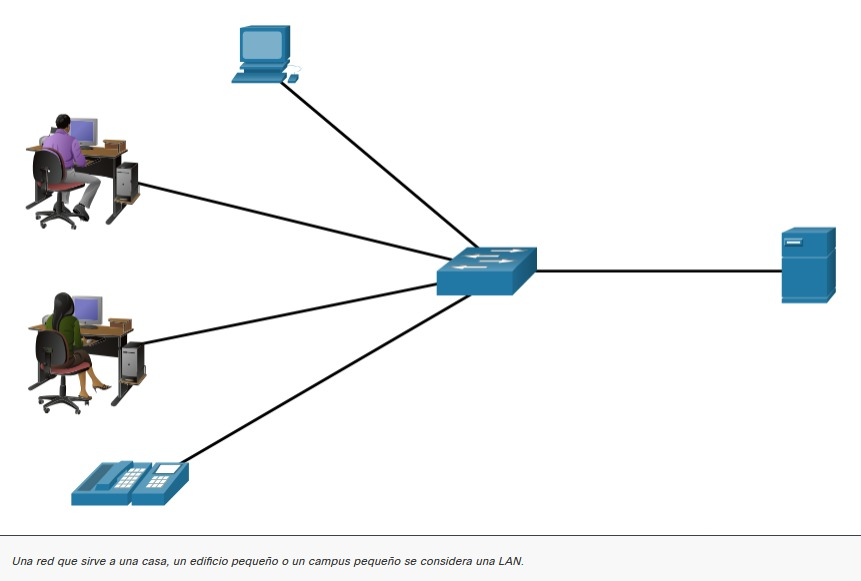

12.1.1 Representaciones de red
Los arquitectos y administradores de redes deben poder mostrar el aspecto que tendrán sus redes. Necesitan poder ver fácilmente qué componentes se conectan a otros componentes, dónde se ubicarán y cómo se conectarán. Los diagramas de redes a menudo usan símbolos, como los que se muestran en la figura, para representar los diferentes dispositivos y conexiones que forman una red.

Un diagrama proporciona una manera fácil de comprender cómo se conectan los dispositivos en una red grande. Este tipo de representación de una red se denomina diagrama de topología. La capacidad de reconocer las representaciones lógicas de los componentes físicos de red es fundamental para poder visualizar la organización y el funcionamiento de una red.
Además de estas representaciones, se utiliza una terminología especializada para describir cómo cada uno de estos dispositivos y medios se conectan entre sí:
Nota: Los términos puerto e interfaz con frecuencia se utilizan en forma indistinta.
12.1.2 Diagramas de topología
Los diagramas de topología son documentación obligatoria para cualquier persona que trabaje con una red. Estos diagramas proporcionan un mapa visual que muestra cómo está conectada la red. Hay dos tipos de diagramas de topología, físicos y lógicos.
Diagramas de topologías físicas
Los diagramas de topología física ilustran la ubicación física de los dispositivos intermedios y la instalación del cable, como se muestra en la figura. Puede ver que las habitaciones en las que se encuentran estos dispositivos están etiquetadas en esta topología física.

Diagramas de topologías lógicas
Los diagramas de topología lógica ilustran los dispositivos, los puertos y el esquema de direccionamiento de la red, como se muestra en la figura. Puede ver qué dispositivos finales están conectados a qué dispositivos intermediarios y qué medios se están utilizando.

Las topologías que se muestran en los diagramas físicos y lógicos son adecuadas para su nivel de comprensión en este punto del curso. Utilice Internet para buscar “diagramas de topología de red” y ver algunos ejemplos más complejos. Si agrega la palabra "Cisco" a su frase de búsqueda, encontrará muchas topologías que usan íconos similares a los que ha visto en estas figuras.
12.1.3 Redes de muchos tamaños
Ahora que está familiarizado con los componentes que componen las redes y sus representaciones en topologías físicas y lógicas, está listo para aprender acerca de los diferentes tipos de redes.
Hay redes de todo tamaño. Pueden ir desde redes simples, compuestas por dos PC, hasta redes que conectan millones de dispositivos.
Las redes domésticas sencillas le permiten compartir recursos, como impresoras, documentos, imágenes y música, entre unos pocos dispositivos finales locales.
Las redes de oficinas pequeñas y oficinas domésticas (SOHO) permiten a las personas trabajar desde casa o desde una oficina remota. Muchos trabajadores independientes utilizan este tipo de redes para anunciar y vender productos, pedir suministros y comunicarse con los clientes.
Las empresas y las grandes organizaciones usan redes para proporcionar consolidación, almacenamiento y acceso a la información en los servidores de red. Las redes proporcionan correo electrónico, mensajería instantánea y colaboración entre empleados. Muchas organizaciones usan la conexión de su red a Internet para proporcionar productos y servicios a los clientes.
Internet es la red más extensa que existe. De hecho, el término Internet significa “red de redes”. Es una colección de redes privadas y públicas interconectadas.
En pequeñas empresas y hogares, muchas PC funcionan como servidores y clientes en la red. Este tipo de red se denomina red entre pares.
Redes domésticas pequeñas
Las redes domésticas pequeñas conectan algunas computadoras entre sí y a Internet.

Redes domésticas/de oficinas pequeñas
La red SOHO permite que las computadoras en una oficina hogareña o remota se conecten a una red corporativa o accedan a recursos compartidos centralizados.

Redes medianas a grandes
Las redes medianas a grandes, como las que se utilizan en corporaciones y escuelas, pueden tener muchas ubicaciones con cientos o miles de hosts interconectados.

Redes mundiales
Internet es una red de redes que conecta cientos de millones de computadoras en todo el mundo.

12.1.4 LAN y WAN
Las infraestructuras de red pueden variar en gran medida en términos de:
Los dos tipos más comunes de infraestructuras de red son las redes de área local (LAN) y las redes de área amplia (WAN). Una LAN es una infraestructura de red que proporciona acceso a usuarios y dispositivos finales en un área geográfica pequeña. Normalmente, una LAN se utiliza en un departamento dentro de una empresa, un hogar o una red de pequeñas empresas. Una WAN es una infraestructura de red que proporciona acceso a otras redes en un área geográfica amplia, que generalmente es propiedad y está administrada por una corporación más grande o un proveedor de servicios de telecomunicaciones. La figura muestra las LAN conectadas a una WAN.

LAN
Una LAN es una infraestructura de la red que abarca un área geográfica pequeña. Las LANs tienen características específicas:

Redes WAN
La figura muestra una WAN que interconecta dos LAN. Una WAN es una infraestructura de la red que abarca un área geográfica extensa. Las WAN generalmente son administradas por proveedores de servicios (SP) o proveedores de servicios de Internet (ISP).
Las WANs tienen características específicas:

12.1.5 El modelo de diseño de red de tres capas
La LAN cableada del campus usa un modelo de diseño jerárquico para separar la topología de red en grupos modulares o capas. Separando el diseño en capas permite que cada capa implemente funciones específicas, lo que simplifica el diseño de la red para una implementación y administración más sencillas. Esto también simplifica la implementación y administración de la red.
La LAN cableada del campus habilita la comunicación entre dispositivos en un edificio o grupo de edificios, así como también la interconexión a la red WAN y el perímetro de Internet en la capa principal de la red.
Un diseño de la red LAN jerárquica incluye acceso, distribución y capas principales como se muestra en la figura.
Modelo de diseño jerárquico

Cada capa está diseñada para cumplir funciones específicas.
La capa de acceso otorga a los puntos de acceso y a los usuarios acceso directo a la red. La capa de distribución agrega capas de acceso y brinda conectividad a los servicios. Por último, la capa de núcleo ofrece conectividad entre las capas de distribución para entornos de LAN grandes. El tráfico de los usuarios se inicia en la capa de acceso y pasa por las demás capas si se necesita utilizar la funcionalidad de esas capas.
Aunque el modelo jerárquico consta de tres capas, es posible que en algunas redes empresariales pequeñas se implemente un diseño jerárquico de dos niveles. Como se muestra en la figura, en un diseño jerárquico de dos niveles, las capas de núcleo y de distribución se combinan en una, lo que reduce el costo y la complejidad.
Núcleo contraído

En arquitecturas de red mallada o plana, los cambios tienden a afectar a una gran cantidad de sistemas. El diseño jerárquico permite restringir los cambios operativos a un subgrupo de la red, lo que facilita la administración y mejora la recuperabilidad. La estructuración modular de la red en elementos pequeños y fáciles de comprender también facilita la recuperabilidad a través de aislamiento de fallas mejorado.
12.1.6 Video - Diseño de red de tres capas
Vea este vídeo para obtener más información sobre el modelo de diseño de red de tres capas.
12.1.7 Arquitecturas de seguridad comunes
Principalmente, el diseño de firewall tiene por objetivo permitir o denegar el tráfico según el origen, el destino y el tipo de tráfico. Algunos diseños son tan simples y solo consisten en diseñar una red externa y una interna, que son determinadas por dos interfaces en un firewall.
Aquí hay tres diseños comunes de firewall.
Privado y público
La red pública (o externa) no es de confianza y la red privada (o interna) es de confianza. Como se ve en la Figura, la red pública (o externa) no es de confianza y la red privada (o interna) es de confianza.
Normalmente, un firewall con dos interfaces se configura del siguiente modo:

Zona desmilitarizada
Una zona perimetral (DMZ, Demilitarized Zone) es un diseño de firewall donde, normalmente, hay una interfaz interna conectada a la red privada, una interfaz externa conectada a la red pública y una interfaz de DMZ, como se ve en la Figura.

Firewall de políticas basados en zonas
En los firewalls de políticas basadas en zonas (Zone-based policy firewalls, ZPF) se utiliza el concepto de zonas para ofrecer mayor flexibilidad. Una zona es un grupo de al menos una interfaz con funciones o características similares. Las zonas ayudan a especificar dónde se debe implementar una regla o política de firewall Cisco IOS. En la Figura, las políticas de seguridad para las redes LAN 1 y LAN 2 son similares y pueden agruparse en una zona para las configuraciones de firewall. De manera predeterminada, el tráfico entre interfaces en la misma zona no está sujeto a ninguna política y pasa libremente. Sin embargo, se bloquea todo el tráfico de zona a zona. Con el fin de permitir el tráfico entre zonas, debe configurarse una política que permita o inspeccione el tráfico.
La única excepción a esta política predeterminada de denegar todo es la zona autónoma del router. La zona autónoma del router es el router en sí mismo e incluye todas las direcciones IP de interfaz de router. Las configuraciones de políticas que incluyen la zona autónoma se aplican al tráfico al router y procedente de él. De manera predeterminada, no hay ninguna política para este tipo de tráfico. El tráfico que debe tenerse en cuenta al diseñar una política para la zona autónoma incluye el tráfico del plano de control y del plano de administración, como SSH, SNMP y protocolos de enrutamiento.